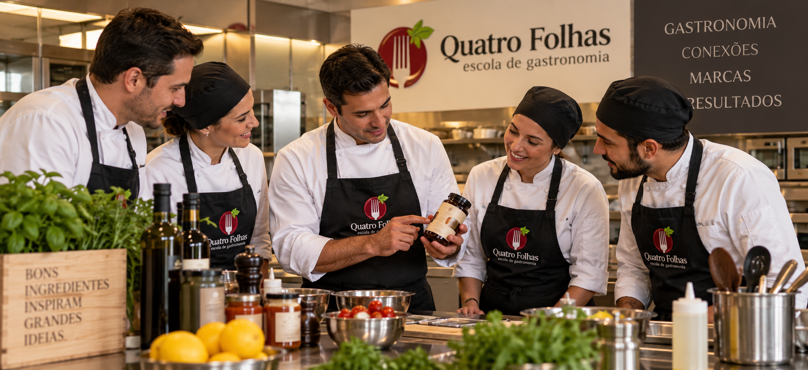

Uso real
Produto aplicado em aula, preparo, degustação, demonstração ou conteúdo.
Parcerias e marcas
A Quatro Folhas recebe marcas, agências e produtoras para criar experiências, conteúdos, treinamentos e ativações dentro de uma escola profissional equipada.
Produto aplicado em aula, preparo, degustação, demonstração ou conteúdo.
Cozinha equipada para encontros, gravações, treinamentos e ativações.
Projeto desenhado conforme objetivo, público, calendário e entrega.

A marca entra na rotina de preparo, aula, degustação, demonstração, conteúdo ou relacionamento.
O espaço permite aulas, gravações, testes, treinamentos e experiências presenciais.
Cada parceria passa por avaliação de aderência, objetivo, público e entrega esperada.
Media kit, PDFs e informações comerciais ficam protegidos para marcas e parceiros cadastrados.
Quer entender como sua marca pode aparecer em uma experiência gastronômica?
Falar com consultorO projeto
A marca aparece em contexto de aula, preparo, degustação, demonstração, conteúdo ou relacionamento.
O contato acontece com alunos, profissionais, empreendedores, convidados, equipes e pessoas interessadas em gastronomia.
Cada parceria é avaliada conforme objetivo, produto, público, calendário, investimento e tipo de entrega desejada.
Possibilidades
Os projetos podem envolver ativação, treinamento, conteúdo, relacionamento ou experiências fechadas, sempre com orientação da equipe da escola.
Aulas, degustações, encontros e experiências para apresentar produtos em contexto gastronômico.
Demonstrações, aplicações, testes e conversas técnicas com público alinhado ao produto.
Uso da estrutura da escola para produção de conteúdo, receitas e materiais digitais.
Projetos para clientes, parceiros, imprensa, convidados, equipes e ações especiais.
Como acontece
A parceria precisa fazer sentido para a escola, para a marca e para o público. O primeiro passo é entender objetivo, produto, calendário, investimento previsto e tipo de entrega desejada.
A marca informa objetivo, produto, público, data desejada e expectativa de entrega.
A equipe avalia aderência com gastronomia, alunos, experiências e posicionamento da escola.
O formato pode envolver aula, conteúdo, ativação, degustação, treinamento ou experiência fechada.
Materiais comerciais e media kit ficam disponíveis apenas para parceiros autorizados pela equipe.
Vamos desenhar uma ativação para sua marca?
Falar com consultorPrimeiro contato
Envie uma mensagem com o nome da marca, objetivo e melhor contato. A equipe retorna para avaliar aderência, formato e melhor caminho.
Marcas e parceiros autorizados podem acessar os materiais reservados com a senha enviada pela equipe.
Entrar com senha